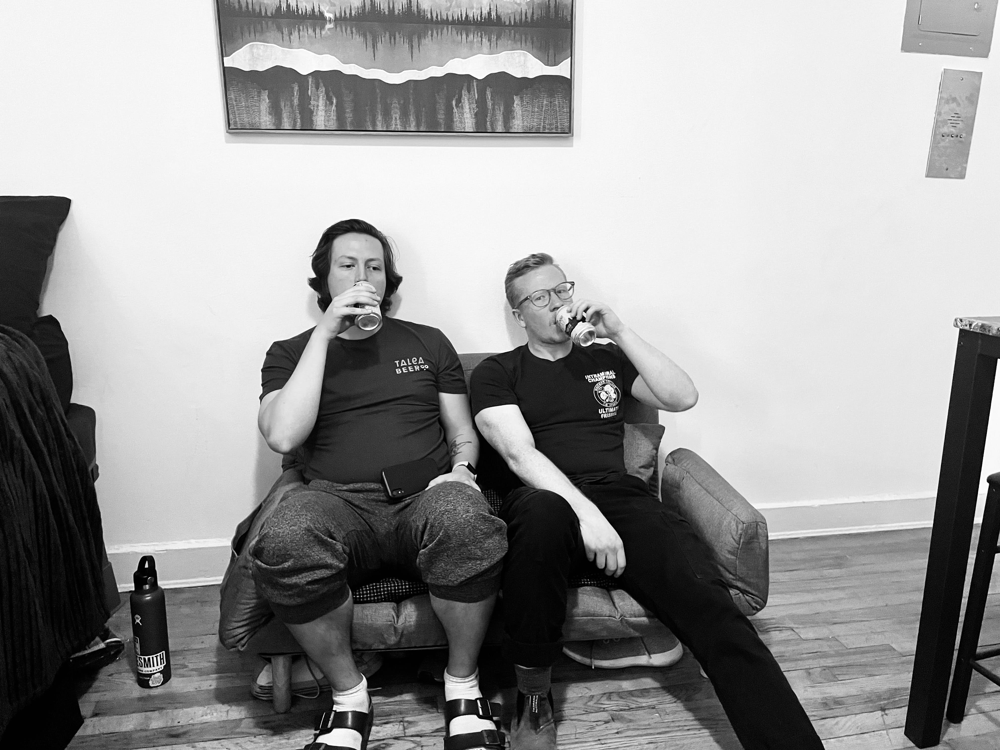
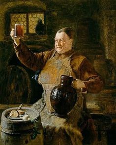
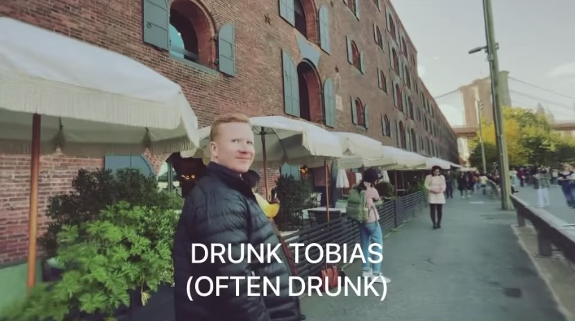
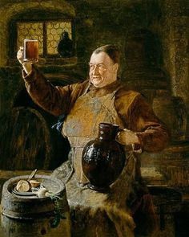
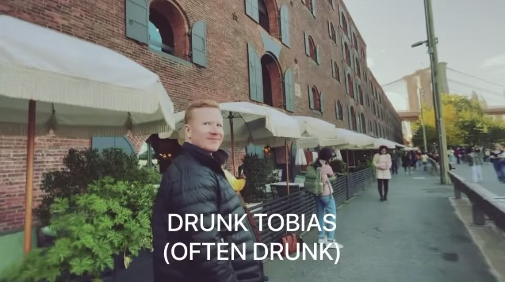

Drunk Tobias Brewing
“This is grain, which any fool can eat, but for which the lord has intended a more divine form of consumption. Let us give praise to our maker and glory to His bounty by learning about beer.” - Friar Tuck (Robin Hood)





The Legend of Drunk Tobias
Tobias hails from the northernmost edge of the northernmost woods known to man. A docile commoner during the morning hours, after a number of cold and cheap beers, the hero comes out in the form of a drunkard. Drunk Tobias has been known to charm a group of a dozen women, fight a whole lot of scoundrels, and sniff out nicotine from the dirtiest ends of the local watering whole. This humble website is dedicated to documenting the coming and goings of this rare individual. Please follow along as we attempt to keep up with this man.